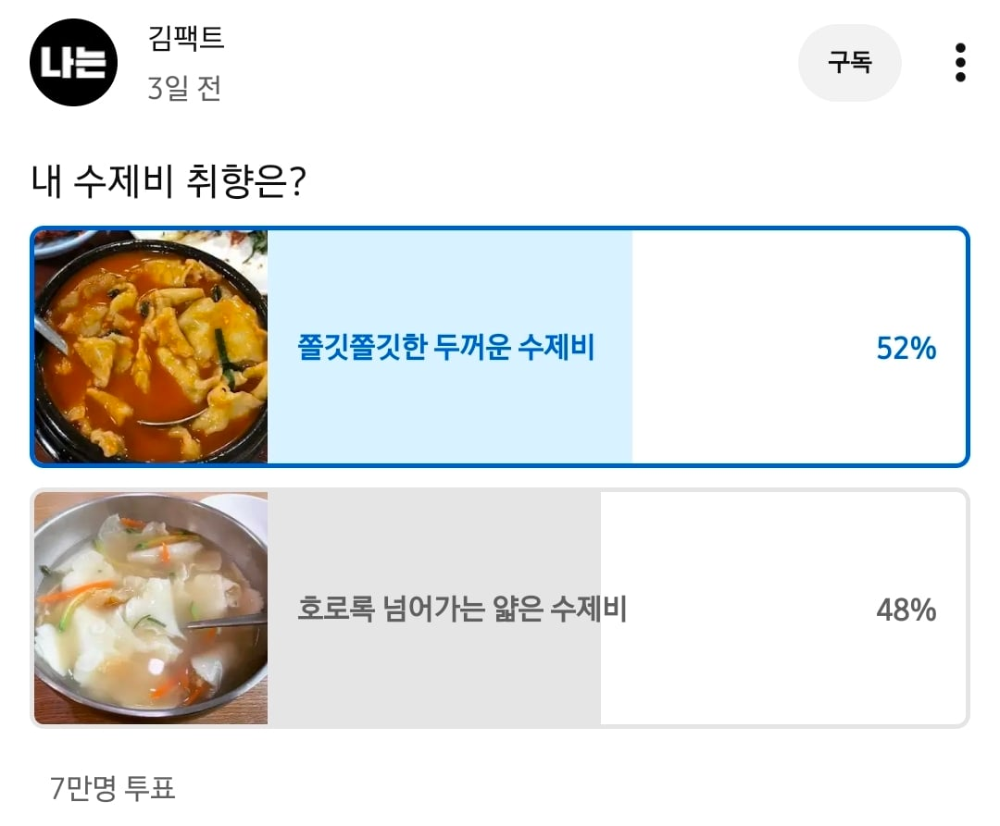

의외로 황밸 수준으로 엇갈림

의외로 황밸 수준으로 엇갈림
두꺼운건 안익은 지뢰 터질까봐 맘편한 앏은거 고름ㅋㅋ
두꺼운게 덜 익기 쉬워서 먹다가 쌩 밀가루반죽 씹을 확률 높음
두꺼운거 밀가루 퍽퍽한거 씹은 이후로는 얇은거.
실투표도 비율 똑같은거 소름이네
푹 익혀나오는 수제비집에선 두꺼운거고 매운탕집같은곳에서 직접 떠서 넣을땐 빠르게 해먹어야하니 얇게 뜨는거지ㅋㅋㅋ 근데 둘중 하나 하라하면 얇제비임
두꺼운 수제비 잘못걸리면 밀가루 씹힘ㅋㅋ 최악
그날 그날 다름
이모! 수제비 좀 얇게 떼소~!
이게 갈린다고?
물복 고르는 놈들 볼 때의 충격이네
?? 진짜 당연히 물복아님?... 딱복은 뭔가 향이나 맛이 강하지 않자너
ㅋㅋㅋㅋ진짜황밸이네
이거 얇은 수제비는 가끔 존나 후루룩 넘어가는데 씹으면 쫄깃한 식감이 남아 있는 ㄹㅇ 개 치트키 같은 애가 하나씩 있음
이거 한번 먹어보면 ㄹㅇ 존나 맛있음
두꺼운건 지뢰 씹을까봐 걱정하지만 얇은건 가끔 존맛 수제비가 뜬다는거임
백번 잘해주다 한번씩 서운하게 하는 사람 vs 백번 좆같이 굴다 한번씩 감동주는 사람
"쟤는 착한일진이야" 보는거같네
아니 걍 빨간거 싫음
저건 예시 사진이고 두께만 보고 고르는거 아닌가
수재비는 잘떠서 저 두 부분을 동시에 즐길수 있어야하거늘
여기도 52 48퍼네 ㅋㅋㅋㅋㅋ
난 일단 얇게 3장 정도 밀은 다음에 한장은 밑에 깔고 그 위에 두장을 손으로 찢어서 올리고 살짝 눌러서 붙인담에
그걸 다시 손으로 찢어서 넣어먹음
그러면 중간 중간 호로록한 부분도 있고 두툼한 부분도 있어서 좋음
그리고 사진처럼 두껍게 하면 안익은데 중간중간 있어서 난 별로긴 함
얇은걸 고르긴 했다만, 얇은부분과 두꺼운부분이 공존해야함. 이게 뜯어내면서 손에 쥔쪽은 조금 두껍게, 뜯어진쪽은 좀 얇게 되면서 한장을 씹을때 얇은 부분과 두꺼운부분이 공존하는걸 머거야 존맛탱임. 그래서 수제비야말로 만드는이의 숙련도가 중요함.
ㅇㄱㄹㅇ임 식감이랑 배인 양념맛이 다채로워야 맛있음
무조건 두꺼운거
얇아야지
얇
얇은게 좋은사람들은 만두피나 먹으시게
두꺼운거 먹고싶은날 두꺼운거 먹고 얇은거 먹고싶은날 얇은거 먹으면 존나 맛있음
오 진짜 황밸 ㅋㅋ 나도 얇파인데
식빵 조물락 거리다 먹는거 처럼
두껍고 쫄깃하게 맛있어서
두꺼운거 콜
개신기하넼ㅋㅋㅋ
솔직히 얇은수제비 먹을바엔 걍 칼국수먹는다 그 밀가루 두툼쫄깃함을 즐기려고 찾는게 수제비아녀?
얇은건 걍 만두피자너